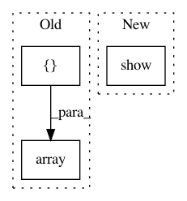

5ee8d4a1719a4c1070924351af9c2119432e7066,examples/attention_maps.py,,generate_cam,#Any#,35
Before Change
for path in ["https://upload.wikimedia.org/wikipedia/commons/thumb/1/1c/Tigerwater_edit2.jpg/170px-Tigerwater_edit2.jpg"]:
seed_img = utils.load_img(path, target_size=(224, 224))
pred_class = np.argmax(model.predict(np.array([img_to_array(seed_img)])))
heatmap = visualize_cam(model, layer_idx, [pred_class], seed_img)
if show:
After Change
plt.axis("off")
plt.imshow(heatmap)
plt.title("Attention - {}".format(utils.get_imagenet_label(pred_class)))
plt.show()
if __name__ == "__main__":
generate_cam()
In pattern: SUPERPATTERN
Frequency: 3
Non-data size: 3
Instances
Project Name: raghakot/keras-vis
Commit Name: 5ee8d4a1719a4c1070924351af9c2119432e7066
Time: 2017-04-29
Author: ragha@outlook.com
File Name: examples/attention_maps.py
Class Name:
Method Name: generate_cam
Project Name: raghakot/keras-vis
Commit Name: 5ee8d4a1719a4c1070924351af9c2119432e7066
Time: 2017-04-29
Author: ragha@outlook.com
File Name: examples/attention_maps.py
Class Name:
Method Name: generate_saliceny_map
Project Name: nl8590687/ASRT_SpeechRecognition
Commit Name: 2ba53cdca52876757f6c066c58e437b8b6a067ab
Time: 2018-04-04
Author: 3210346136@qq.com
File Name: SpeechModel.py
Class Name: ModelSpeech
Method Name: RecognizeSpeech